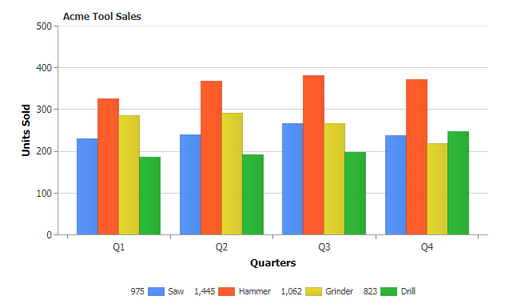
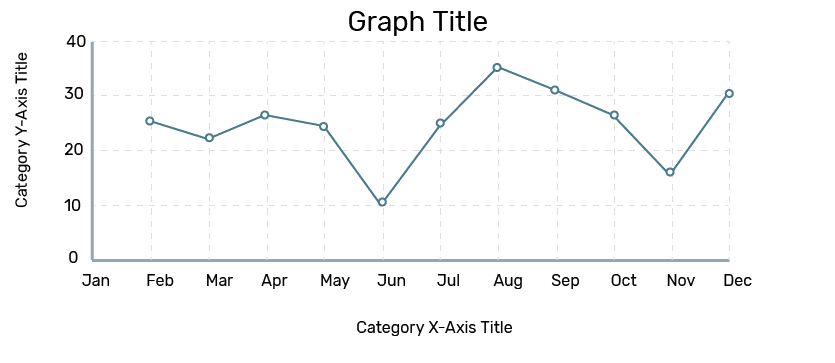
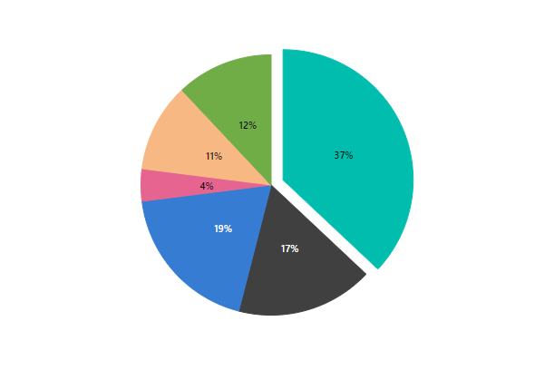
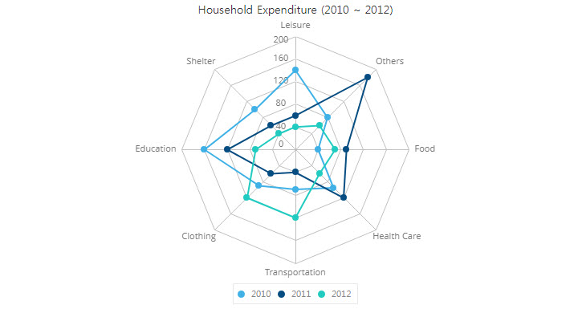
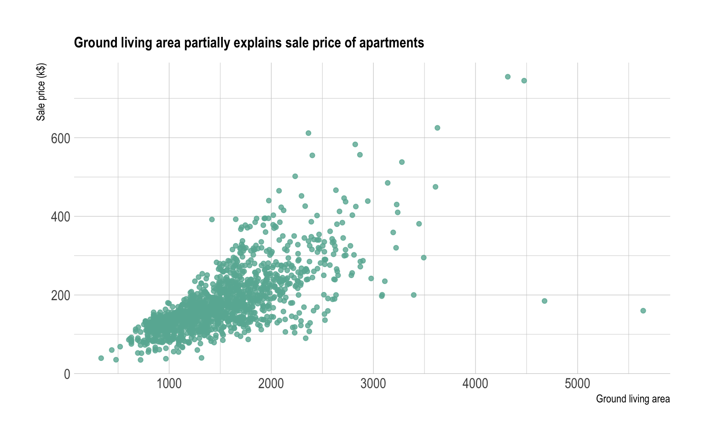
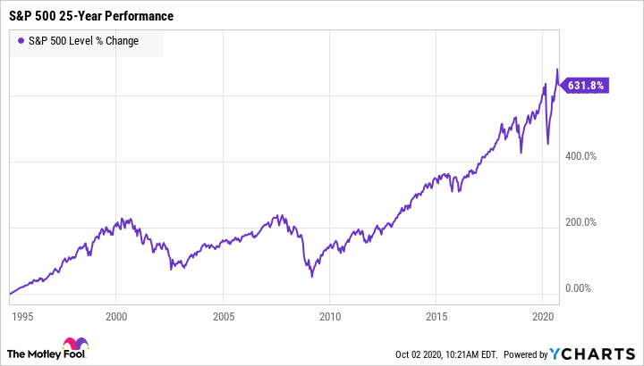
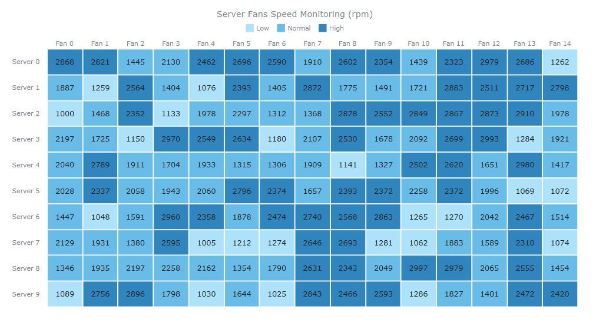

<div class="graph-type ml-2">
    <div class="row caption-body">
    <div class="toolbar">
        <button ejs-button  >
            <i class="e-icons e-save-02"></i>
        </button>
        <button ejs-button  >
            <i class="e-icons e-Saveas"></i>
        </button>
        <button ejs-button >
            <i class="e-icons e-MT_Delete"></i>
        </button>
    </div>
    </div>
    <hr>
<div class="radio-section">
    <div class="right-section" [ngStyle]="{'display':sharedData == 'view' ? 'none' : 'block' }">
<section class="m-3 ">
<div>
  <input type="radio" id="control_01" name="select" value="column" checked [disabled]="columngraph == false" [(ngModel)]="radioChecked">
  <label for="control_01" (click)="graphswitch(columngraph ,'column')" (mouseenter)="graphenter(columngraph ,'column')"  (mouseleave)="graphleave('column')">
    <p>Bar</p>
    
  </label>
</div>
<div>
  <input type="radio" id="control_02" name="select" value="line" [disabled]="linegraph == false" [(ngModel)]="radioChecked">
  <label for="control_02" (click)="graphswitch(linegraph ,'line')" (mouseenter)="graphenter(linegraph ,'line')"  (mouseleave)="graphleave('line')">
    <p>Line</p>
    
  </label>
</div>
<div>
  <input type="radio" id="control_03" name="select" value="pie" [disabled]="piegraph == false" [(ngModel)]="radioChecked">
  <label for="control_03" (click)="graphswitch(piegraph ,'pie')" (mouseenter)="graphenter(piegraph ,'pie')"  (mouseleave)="graphleave('pie')">
    <p>Pie</p>
    
  </label>
</div>
<div>
  <input type="radio" id="control_04" name="select" value="radar" [disabled]="radargraph == false" [(ngModel)]="radioChecked">
  <label for="control_04" (click)="graphswitch(radargraph ,'radar')" (mouseenter)="graphenter(radargraph ,'radar')"  (mouseleave)="graphleave('radar')">
    <p>Radar</p>
    
  </label>
</div>
    <div >
      <input type="radio" id="control_05" name="select" value="scatter" [disabled]="scattergraph == false" [(ngModel)]="radioChecked">
      <label for="control_05" (click)="graphswitch(scattergraph ,'scatter')" (mouseenter)="graphenter(scattergraph ,'scatter')"  (mouseleave)="graphleave('scatter')">
        <p>Scatter</p>
        
      </label>
    </div>
    <div>
      <input type="radio" id="control_06" name="select" value="stock" [disabled]="stockgraph == false" [(ngModel)]="radioChecked">
      <label for="control_06" (click)="graphswitch(stockgraph ,'stock')" (mouseenter)="graphenter(stockgraph ,'stock')"  (mouseleave)="graphleave('stock')">
        <p>Stock</p>
        
      </label>
    </div>
    <div>
      <input type="radio" id="control_07" name="select" value="heat" [disabled]="heatgraph == false" [(ngModel)]="radioChecked">
      <label for="control_07" (click)="graphswitch(heatgraph , 'heat')" (mouseenter)="graphenter(heatgraph , 'heat')"  (mouseleave)="graphleave('heat')">
        <p>Heat Map</p>
        
      </label>
    </div>
    </section>
</div>
<div class="left-section" [ngStyle]="{'width':sharedData == 'view' ? '100%' : '52%' }">
    
        <app-column-graph    [graphmsg]="graphcompossermsg"       *ngIf=" graph == 'column' "  ></app-column-graph>
        <app-line-graph      [graphmsg]="graphcompossermsg"       *ngIf=" graph == 'line' "    ></app-line-graph>
        <app-pie-graph       [graphmsg]="graphcompossermsg"       *ngIf=" graph == 'pie' "     ></app-pie-graph>
        <app-radar-graph     [graphmsg]="graphcompossermsg"       *ngIf=" graph == 'radar' "   ></app-radar-graph>
        <app-stock-history   [graphmsg]="graphcompossermsg"       *ngIf=" graph == 'stock' "   ></app-stock-history>
        <app-scatter-dots    [graphmsg]="graphcompossermsg"       *ngIf=" graph == 'scatter' " ></app-scatter-dots>
        <app-heat-map-graph  [graphmsg]="graphcompossermsg"       *ngIf=" graph == 'heat' "    ></app-heat-map-graph>
    
</div>
</div>
    </div>